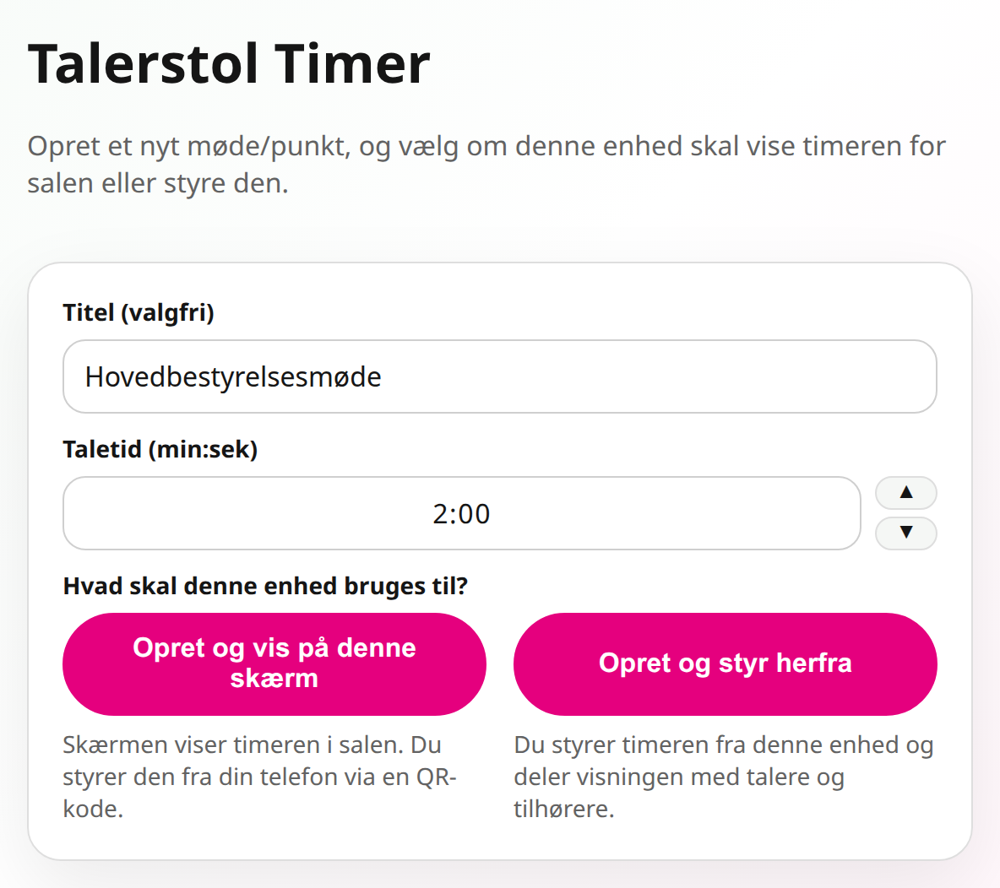
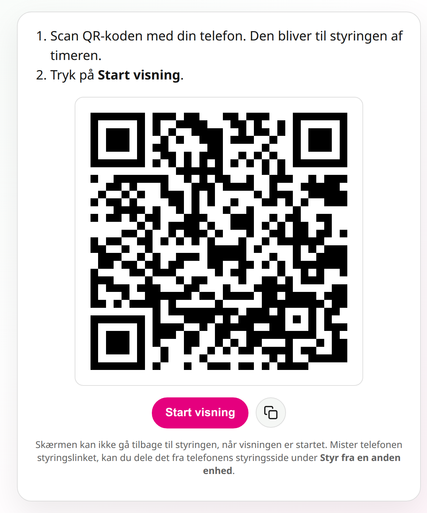
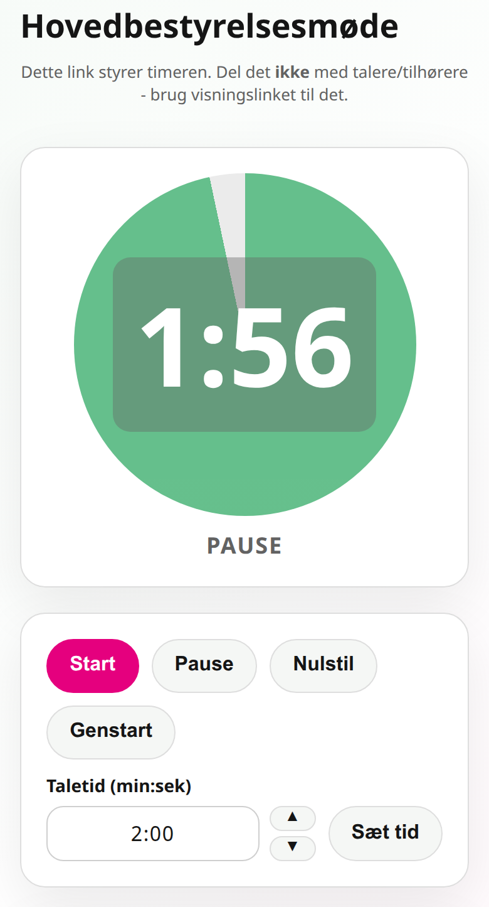

Hvordan man bruger taletidssystemet
Taletidssystemet viser en nedtælling for talerne i salen, mens ordstyreren styrer den fra sin mobiltelefon. For at starte op skal du have:
- en laptop eller tablet, der viser taletiden for salen, og
- en mobiltelefon, der styrer den.
Begge skal være på internettet.
Sådan starter du
- På laptoppen eller tabletten: gå til taletid.challenge.dk. Skriv eventuelt en titel, og sæt taletiden (min:sek).
- Tryk på Opret og vis på denne skærm. Skærmen viser nu “Forbind din telefon” med en stor QR-kode.
- Scan QR-koden med mobilens kamera, og åbn linket. Mobilen viser nu styringen.
- Tryk på Start visning på laptoppen eller tabletten. Den viser taletiden i fuldskærm.



Sådan styrer du fra mobilen
| Knap | Hvad den gør |
|---|---|
| Start | Starter nedtællingen. |
| Pause | Stopper nedtællingen. Tryk Start for at fortsætte. |
| Nulstil | Sætter tiden tilbage til hele taletiden, på pause. |
| Genstart | Nulstiller og starter med det samme. Brug den, når næste taler går på. |
| Sæt tid | Giver en ny taletid. Vælg den med ▲ ▼ (10 sekunder ad gangen), eller skriv den, og tryk Sæt tid. Timeren nulstilles og sættes på pause. |
Cirklen er grøn, mens der er tid. De sidste 10 sekunder pulserer den i magenta. I overtid blinker den rødt og tæller videre i minus.
Del styringen med en anden
Nederst på mobilens styringsside kan du folde Styr fra en anden enhed ud. Derfra kan en anden få styringen på to måder:
- QR-kode: den anden scanner koden direkte fra din mobil.
- Del-knappen: send linket i en mail, SMS eller besked.
Alle med linket kan styre taletiden, så del det kun med dem, der skal styre. Talere og tilhørere kan i stedet få visningslinket, som kun viser taletiden.
Gode råd
- Dvale: du behøver ikke ændre indstillinger. Skærmen holdes tændt, så længe taletiden vises. Lad låget være åbent, sæt laptoppen til strøm, og skift ikke til andre programmer.
- Fuldskærm: rør musen eller skærmen, så kommer knappen frem øverst til højre.
- Gem styringslinket: laptoppen kan ikke vende tilbage til styringen. Lukker du fanen på mobilen, er styringen væk. Del linket med dig selv fra start, eller opret et nyt møde.